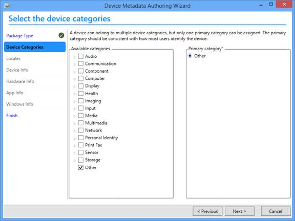
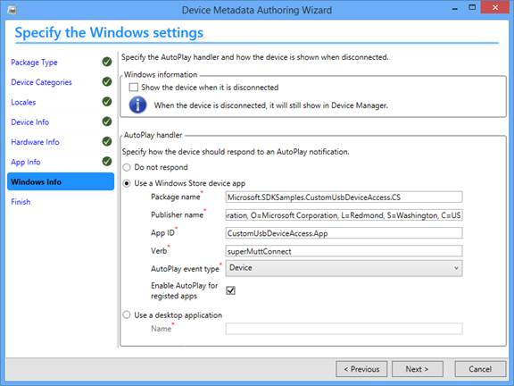
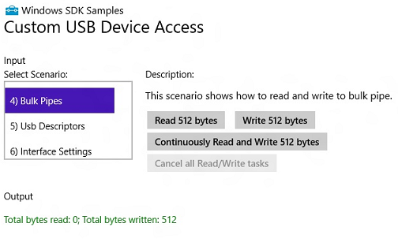

This sample shows how to communicate with a USB device by using the Windows.Devices.Usb namespace. The sample can communicate with these devices:
- The OSR USB FX2 learning kit. You can get the learning kit from OSR Online.
- The SuperMUTT device. You can purchase the device from JJG Technologies. You must update the device firmware before using it (discussed later).
The sample demonstrates these key scenarios:
- How to connect to a USB device
- How to send a USB control transfer
- How to send a USB interrupt transfer
- How to send a USB bulk transfer
- How to get USB descriptors
- How to select a USB interface setting
- How to handle app suspension and resume events
- How to implement AutoPlay activation
| Windows runtime class | Description |
|---|---|
| App |
Invoked when the sample app is activated. The OnActivated implementation causes the app to get launched when the device is connected to the system. When the app is activated, the user is shown information about which device launched the app. |
| DeviceListEntry |
This class stores DeviceInformation objects associated with each device, dynamically detected by the DeviceWatcher object. This class is used by the UI to display device-specific information. For example, the UI uses this class to get the device interface path so that the user can identify the device and use it for data transfers. |
| EventHandlerForDevice |
This class implements all event handlers required by the sample app. There two types of events that the app handles:
|
| Scenario1_DeviceConnect |
This class implements methods that use the DeviceWatcher object to dynamically detect devices (see EventHandlerForDevice). That reference is used through the sample to interact with the device. When finished, the sample closes the device by releasing that reference. When the class is instantiated, the app creates DeviceWatcher objects for SuperMUTT and OSRFX2 devices. Those types of devices are detected by their respective DeviceWatcher objects. |
| Scenario2_ControlTransfer |
This class implements methods that demonstrate how to initialize USB setup packets and send control transfers to the device. The sample changes the blink pattern (SuperMUTT) and seven segment display (OSRFX2) by using control transfers. |
| Scenario3_InterruptPipes |
This class implements methods that write to a USB interrupt pipe (only applies to SuperMUTT)and read from another interrupt pipe as data arrives in the pipe. To read data, the sample registers an event handler that gets invoked every time there is data to read. In the sample's event handler, it reads the received data and displays number of times it read data. |
| Scenario4_BulkPipes |
The class implements methods to read and write data to and from USB bulk pipes. The sample demonstrates how to start and cancel asynchronous operations for bulk transfers. After the transfer is complete, the sample displays the number of bytes read or written. Data is read and written by using DataReader and DataWriter objects. |
| Scenario5_UsbDescriptors |
The class implements methods that display all USB descriptors associated with the current device. The sample displays the device descriptor, configuration descriptor, interface descriptors for all settings and their endpoint descriptors. It also shows how to obtain the entire USB configuration descriptor as a raw descriptor and use the DataReader to read bytes from the descriptor. |
| Scenario6_InterfaceSetting |
This class implements methods that demonstrate how to enumerate USB alternate settings for an interface, get an active setting and, select an alternate setting. Selecting an alternate setting applies to the SuperMUTT device. Retrieving number of interface settings (drop down list) and getting active interface setting applies to OSRFX2 and SuperMUTT devices. |
| Scenario7_Sync |
This class implements methods that syncs data with the device in a background task. Because only one process can access UsbDevice object, the app closes the previous reference obtained in Scenario1_DeviceConnect and opens the device again after the task is complete. Sync completion is is notified though a registered callback registered by the app. For more information, see this topic about sync-ing with a device. |
App manifest package
The sample adds the DeviceCapability element in the Package.appxmanifest file. Device information includes the device's vendor/product Ids and device class information. For OSRFX2 and SuperMUTT devices, the device class is specified by indicating the device class code and a string for the code.
<Capabilities>
<!--When the device's classId is FF * *, there is a predefined name for the class. You can use the name instead of the class id.
There are also other predefined names that correspond to a classId.-->
<m2:DeviceCapability Name="usb">
<!--OSRFX2 Device-->
<m2:Device Id="vidpid:0547 1002">
<m2:Function Type="classId:ff * *"/>
<!--<m2:Function Type="name:vendorSpecific"/>-->
</m2:Device>
<!--SuperMutt Device-->
<m2:Device Id="vidpid:045E 0611">
<!--<m2:Function Type="classId:ff * *"/>-->
<m2:Function Type="name:vendorSpecific"/>
</m2b:Device>
</m2:DeviceCapability>
</Capabilities>Related topics
Related technologies
Windows.Devices.UsbProvides Windows Runtime classes and enumerations that a Windows store app can use to communicate with an external USB device that uses WinUSB (Winusb.sys) as the device driver.
, Windows.Devices.EnumerationProvides Windows Runtime classes for device discovery and notifications about devices for apps that use them. Windows.ApplicationModel.Background
, Windows.ApplicationModel.BackgroundEnables an app to schedule background tasks to run app code even when the app is suspended.
, DeviceWatcherEnumerates devices dynamically, so that the app receives notifications if devices are added, removed, or changed after the initial enumeration is complete.
, DataReaderReads data from an input stream. Used for reading data from a USB pipe.
, DataWriterWrites data to an output stream. Used for writing data to a USB pipe.
, Auto-launching with AutoPlayUse AutoPlay to provide your app as an option when a user connects a device to their computer.
Operating system requirements
| Client | |
|---|---|
| Server |
Build the sample
Driver requirements
The sample app communicates with the device through the Microsoft-provided kernel-mode driver, Winusb.sys. You must install it as the device driver.
Hardware manufacturers can specify Winusb.sys as the device driver in either of these two ways:
- By providing a custom INF that references the Microsoft-provided Winusb.inf file. For more information, see WinUSB (Winusb.sys) Installation.
- By setting Microsoft operating system (OS) feature descriptors that report the compatible ID as "WINUSB". In this case, Windows matches the compatible ID with the driver and automatically loads Winusb.sys as the device driver. For more information, see WinUSB Device.
- Open Device Manager and locate the device.
- Right-click the device and select Update driver software... from the context menu.
- In the wizard, select Browse my computer for driver software.
- Select Let me pick from a list of device drivers on my computer.
- From the list of device classes, select Universal Serial Bus devices.
- The wizard displays WinUsb Device. Select it to load the driver.
If you are using the OSRFX2 device...
The preceding procedure does not add a device interface GUID for the app to access the device. You must add the GUID manually by following this procedure.
- Load the driver as described in the preceding procedure.
- Generate a device interface GUID for the OSRFX2 device, by using a tool such as guidgen.exe.
- Find the registry key for your OSRFX2 device under this key. In this example, VID and PID of the device is VID_0547&PID_1002:
HKEY_LOCAL_MACHINE\SYSTEM\CurrentControlSet\Enum\USB\VID_0547&PID_1002
- Under the Device Parameters key, add a String registry entry named DeviceInterfaceGUID or a Multi-String entry named DeviceInterfaceGUIDs. Set the value to the GUID you generated in step 2.
- Disconnect the device from the system and reconnect it to the same physical port.
Note If you change the physical port then you must repeat steps 1 through 4.
If you are using the SuperMUTT device...
Windows automatically loads Winusb.sys as the device driver. Otherwise, manually install the driver by using the preceding instructions.
- Download and install the MUTT Software Package.
- Open a command prompt and run the MuttUtil tool included in the package. Use the tool to update the firmware:
MuttUtil.exe –forceupdatefirmware - By using the MuttUtil tool, change the device mode to WinRTUsbPersonality:
MuttUtil.exe –SetWinRTUsbThe SuperMUTT device when configured in WinRTUsbPersonality mode, exposes configuration, interfaces, and endpoints, that work with the sample.
Update and deploy device metadata
These build instructions are only for building this sample so it can be tested locally with OSRFX2 and SuperMUTT devices. The device metadata for two devices is included in this project.
-
SuperMUTT device metadata file: 8E5ADE77-7398-458A-B12D-C2706D7C03CE.devicemetadata-ms
-
OSRFX2 device metadata file: 1BA8367E-1D19-4217-93BB-B10408850DE4.devicemetadata-ms;
Note If you are authoring device metadata for your own device, you must also ensure that the Package name, Publisher name, and App ID are in sync with those that you registered with the Windows Store.
The images in this section show how to create a device metadata package. If you are opening an existing package, information in the package should be populated in the wizard.
To create and install the device metadata package by using the Device Metadata Authoring Wizard, follow these instructions:
- Open the Device Metadata Authoring Wizard. You can open the tool in either of these ways:
- If you have the Windows Driver Kit (WDK) installed, open Driver > Device Metadata > Authoring.
- If you have the Standalone SDK installed, the tool is located at <install_path>\bin\x86\DeviceMetadataWizardexe.
- Check Other in Device Categories.

- On the Locales page, Check the locale for which you want the package.

- On the Device Info page, enter Model Name, Manufacturer, and
Description.

- On the Hardware Info page, enter the hardware ID of your device.

- On the App Info page, clear the Package name, Publisher name, and
Windows Store App ID.

- On the Windows Info page, add information about the Package name, Publisher name, and App ID. That information is registered with the Windows Store. This is required for AutoPlay.

Notice that in the preceding image, Enable AutoPlay for registered apps is checked. That option allows other registered-apps to participate in AutoPlay. The AutoPlay feature for this sample is enabled through the Package.appxmanifest file (discussed later).
- Open the Finish tab. Select the Copy packages to your system's local metadata store check box.

Note
The device metadata package generates an Experience GUID that must match the Device event value under the Declarations tab of the Package.appxmanifest. When the device is connected to the system, the app is associated and launched automatically.
Alternatively, you can manually install the device metadata.
To manually install the device metadata package, follow these instructions:
- Enable test signing on your computer. Open a command window as Administrator. Enter the following command.
bcdedit /set TESTSIGNING ON
- Copy device metadata files to this location:
-
SuperMUTT device metadata file: 8E5ADE77-7398-458A-B12D-C2706D7C03CE.devicemetadata-ms
-
OSRFX2 device metadata file: 1BA8367E-1D19-4217-93BB-B10408850DE4.devicemetadata-ms
%PROGRAMDATA%\Microsoft\Windows\DeviceMetadataStore\<locale>
Where, <locale> specifies the locale such as en-US.
-
Now that device metadata package is installed, you can test it.
To verify that the device metadata is loaded, follow these instructions:
- Connect the device to the computer.
- In Control Panel, open View devices and printers and verify that the icon of the device is this image:

- Verify that the device description is:
Device Metadata Package Sample for <device>
Where, <device> is SuperMUTT or OSRFX2.
Troubleshooting
If the device metadata in View devices and printers does not show the expected icon and description,
- Open View devices and printers and remove the device.
- Clear the device store cache.
- Delete all files/folders under:
%PROGRAMDATA%\Microsoft\Windows\DeviceMetadataCache\
- Connect the device and verify that the correct icon and description is shown in the UI.
Customizing the sample for your device
You can extend this sample for your device by performing these tasks.
- Create a DeviceWatcher object for your device in Scenario1_DeviceConnect.
- Add information about your device in the
DeviceCapability in the Package.appxmanifest file. The information must be added under the
DeviceCapability element with Name attribute set to "usb".
Note You cannot modify the USB device capability in Microsoft Visual Studio 2013. You must right-click the Package.appxmanifest file in Solution Explorer and select Open With..., and then XML (Text) Editor. The file opens in plain XML.
Add information about the device under DeviceCapability.
If you specify the device class code, make sure that it is supported. For a list of supported device classes see Updating the app manifest package for a USB device.<wb:DeviceCapability Name="usb"> <!--OSRFX2 Device--> .... <!--SuperMutt Device--> .... <!--Your Device--> <wb:Device Id="vidpid:XXXX XXXX"> <wb:Function Type="classId:XX * *"/> </wb:Device> </wb:DeviceCapability>
Enabling AutoPlay
The AutoPlay feature is enabled in the App manifest.
The sample is one the recommended app in the, review those settings and related code:
- In Visual Studio 2013, open Package.appxmanifest in the visual editor.
- On the Declarations tab, select the AutoPlay Device declaration.
- The Verb setting identifies a value that is passed to your app for the selected option. The value is passed to the app when the OnActivated handler is invoked (See AutoPlay.cpp). By accessing the args->Verb value, the app notifies the user.
- The Action display name setting identifies the string that AutoPlay displays for your app.
- In the Device event value, the ExperienceID GUID must match the ExperienceID in your device's StoreManifest file generated by the Device Metadata Authoring Wizard.
- The app must implement how it should respond when launched. For code example, see AutoPlay.cpp/cs. For the JavaScript version of the sample, see default.js (ready: method). If the app does not handle the event, the app will not launch and show the content.

Building the Sample
To build this sample, open the solution (.sln) file titled CustomUsbDeviceAccess.sln from Visual Studio 2013. Press F7 or go to Build->Build Solution from the top menu after the sample has loaded.
Run the sample
- To run this sample after building it, press F5 (run with debugging enabled) or Ctrl-F5 (run without debugging enabled), or select the corresponding options from the Debug menu. To deploy the app, select Build > Deploy CustomUsbDeviceAccess.
- Select a USB device. To determine the device to open, view the device interface path shown in the Output string.
- Click the Connect to device button.
- Choose one of the scenarios in the Select scenario input box: either 1) Connecting To Device or 2) Control Transfer, and so on.
- To find devices, select 1) Connecting To Device and click the Start Device Watcher to find devices. Select the device from the list to open the device.

- To send a USB vendor control transfer, select 2) Control Transfer. Set the blink pattern to initiate a transfer.

- To perform interrupt data transfers, select 3) Interrupt Pipes. For the SuperMUTT device, you can read and write data. To write data, click the
Write To Interrupt Out button. The transfer writes 1024 bytes to the interrupt OUT endpoint. Number of bytes is the maximum packet size supported by the endpoint. To read from the device, click
Register For Interrupt Event. This starts transfer from the interrupt IN endpoint. The UI shows the number of bytes read and the count of events received.

For the OSR FX2 board, you can only read data. To read interrupt data click Register For Interrupt Event and then press switches on the board to generate data.

- To perform bulk transfers, select 3) Bulk Pipes. Click the appropriate button to start the transfer. You can cancel all transfers by clicking the
Cancel all Read/Write tasks button.


- To view USB descriptors, select 4) Getting Descriptors. Select the type of descriptor you want to get. The descriptor data is shown on the UI.

- To select an alternate setting, select 6) Selecting Interface Settings. This scenario is only enabled for the SuperMUTT device because the device supports two identical settings for demo purposes.

- To start sync with a device in a background task, select 7) Sync with Device.
The app closes the previous reference and reopens it because the sync scenario runs in a separate process. As a result, the user is prompted to allow access to the device. The output string shows the device instance of the device that is closed.

To cancel an in-progress sync operation, select Cancel Sync with the device.
The OSR FX2 board can hold up to 2048 bytes. If the buffer is full, subsequent writes wait until the buffer can fit more data.